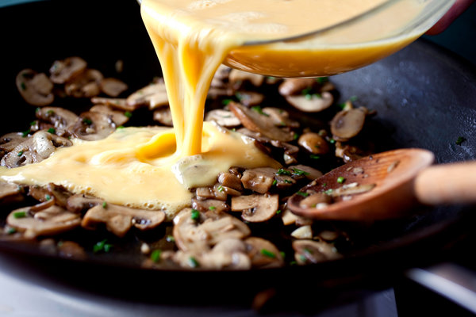

Eggs and Mushrooms

Description
An egg yolk added to sizzling mushrooms. A great combination for breakfast. All you need is parsley, lemon and a bit of cream
Ingredients
- 1 tablespoon butter
- 4 large fresh mushrooms, sliced
- 1/4 teaspoon lemon juice, sliced
- salt and freshly ground paper to taste
- 1 tablespoon heavy whipping cream
- 2 eggs
- 1 tablespoon milk
- l tablespoon minced fresh parsley
Steps
- Melt butter in a skillet over medium heat and cook mushrooms until softened, about 3 minutes. Add lemon juice and salt. Pour in cream, cover, and cook over low heat until thickened, about 5 minutes
- Beat eggs, milk,parsley, and salt in a cup. Pour over mushrooms in the skillet ad allow to set for 2 minutes. Stir until eggs are well scrambled and have the desired consistency, 3 to 5 minutes more. Serve garnished with additional parsley
Back to Main Page